図解：初期キリスト教の美術
初期キリスト教美術の成立
- 1世紀頃
 皇帝崇拝と迫害ローマ帝国が一神教を
皇帝崇拝と迫害ローマ帝国が一神教を
脅威とみなし迫害 - カタコンベの時代
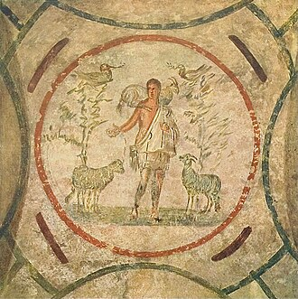
地下墓所の暗示的表現信者が地下墓所に壁画
羊飼いやモノグラムで暗示 - 313年
 ミラノ勅令で公認コンスタンティヌス1世が
ミラノ勅令で公認コンスタンティヌス1世が
信仰の自由を認める - 313年〜
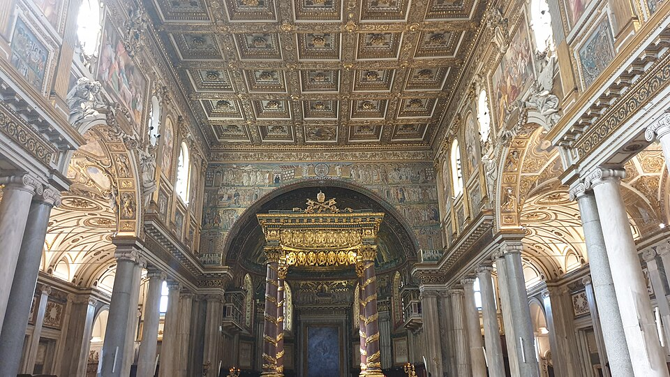
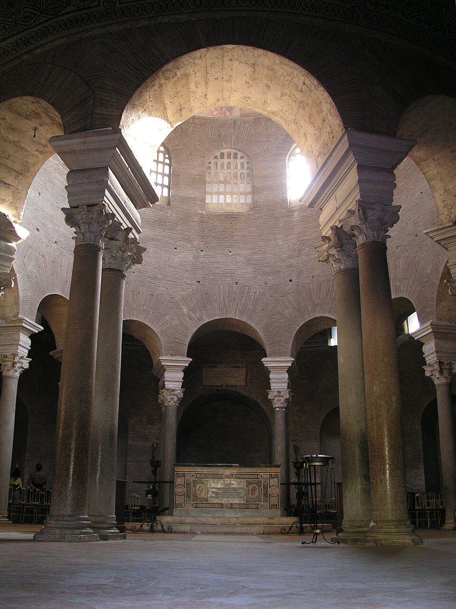
教会勝利の時代バシリカ式・集中式の教会
図像で聖書の内容を伝える
二つの時代の違い
図版の出典
- 《プリマ・ポルタのアウグストゥス》作者不詳：出典（CC BY-SA 4.0）
- 《善き羊飼い（プリシッラのカタコンベ、ヴェラティオの間天井）》作者不詳：出典（Public domain（PD-Art））
- 《キリストのモノグラム（キー・ロー、模式図）》Jackaranga（原図Chrismon、修整AnonMoos）：出典（CC BY-SA 3.0）
- 《コンスタンティヌス大帝の大理石巨像頭部》作者不詳：出典（CC BY-SA 2.5）
- 《サンタ・マリア・マッジョーレ大聖堂（現存身廊）》初期設計者不詳／後世の複数の建築家・工房：出典（CC BY-SA 2.0）
- 《サンタ・コスタンツァ墓廟（内部）》設計者不詳：出典（CC BY 2.0）
重要人物
迫害と混乱の時代の皇帝
キリスト教を認めた皇帝
迫害とカタコンベの時代
皇帝崇拝とキリスト教への迫害
動画 0:35～現在では世界規模で信者を持つキリスト教も、成立当初は新興宗教の一つでした。当時、ヨーロッパで広大な領土を誇っていたローマ帝国は、この宗教を脅威とみなし、信者を迫害しました。
キリスト教が成立した1世紀頃のローマ帝国では、ギリシャ神話の影響を受けたローマ神話が広く信じられていました。多神教を信じる人が多いことは、皇帝にとって都合がよいものでした。皇帝を神のように崇める「皇帝崇拝」という考え方があったためです。
ローマ美術の代表作である《プリマ・ポルタのアウグストゥス》の足元には、赤ん坊のような小さな像があります。これはローマ神話の愛の神クピドで、日本や英語圏ではキューピッドという呼び名で知られています。ユリウスを「神のごときユリウス」と称し、皇帝を現人神として崇拝させることで、その威厳を保ちました。
画像を拡大 ＋
《プリマ・ポルタのアウグストゥス》
- 作者
- 作者不詳
- 制作時期
- 紀元後1世紀（14～29年頃）
- 所在地・所蔵
- ヴァティカン美術館、収蔵番号2290
- 素材・形式
- 彫刻
出典・画像について
画像出典：Joel Bellviure
CC BY-SA 4.0
作品情報：作品・画像・利用条件
皇帝を神として扱えば神の数は増えますが、多神教では大きな問題になりません。しかし、一神教であるキリスト教では、皇帝崇拝を受け入れることができませんでした。そのため、キリスト教信者が増えることは、皇帝にとって都合が悪かったのです。
キリスト教は、母体となったユダヤ教と比べて厳しい戒律や民族の制限がなく、人々に受け入れられやすい宗教でした。急速に信者を増やす宗教を、単なる新興宗教の一つとして無視することはできませんでした。日本で、南無阿弥陀仏を唱えるだけでよいとされた浄土宗が広く受け入れられたことも、理解の助けとなる比較です。キリスト教は、成立から313年に認められるまで、激しい迫害を受けることになりました。
初期キリスト教美術の二つの時代
動画 2:18～初期キリスト教美術は、主に二つの時期に分けられます。迫害を受けていた頃の「カタコンベの時代」と、正式に認められてからの「教会勝利の時代」です。
地下墓所カタコンベ
動画 2:31～カタコンベは、地下墓所を意味するイタリア語です。迫害されていたキリスト教信者は、ここでひっそりと集会し、壁画を描いて信仰の対象としました。ただし、地下墓所は迫害から逃れる隠れ家として作られたというより、死後に肉体が復活するという考えのもと、土葬を行っていたことに由来します。もともとは墓地として使われていた場所だったのです。
文字と図像に託した暗示
動画 3:00～信者は、弾圧者の目をごまかすために、間接的な表現を使いました。XとPを組み合わせた記号は、ギリシャ語の「キリスト」の先頭二文字を組み合わせ、イエス・キリストを暗に示すものです。このような文字による暗号を、モノグラムと呼びます。現在も、さまざまなブランドに用いられています。

《キリストのモノグラム（キー・ロー、模式図）》
- 作者
- Jackaranga（原図Chrismon、修整AnonMoos）
- 制作時期
- 現代模式図（2007年公開、2010年修整）
- 所在地・所蔵
- Wikimedia Commons公開図版
- 素材・形式
- 記号の模式図
出典・画像について
原作品そのものではなく、模式図・複製・再現の画像です。
画像出典：Original uploader was Jackaranga at en.wikipedia
CC BY-SA 3.0
作品情報：作品・画像・利用条件
人物や図像でも、教えを間接的に表しました。羊を連れた若者はキリスト、羊は信者を暗示します。一見するとキリスト教とは無関係な図像に見え、追及された場合にも言い逃れができるような表現です。こうしたものを、暗示的表現と呼びます。

《善き羊飼い（プリシッラのカタコンベ、ヴェラティオの間天井）》
- 作者
- 作者不詳
- 制作時期
- 3世紀後半
- 所在地・所蔵
- プリシッラのカタコンベ、ローマ
- 素材・形式
- 壁画
出典・画像について
1903年刊行図版由来の再現画像で、現地の現代写真ではありません。
画像出典：Unknown authorUnknown author
Public domain（PD-Art）
作品情報：作品・画像・利用条件
制作メモ
低解像度の配信写真です。

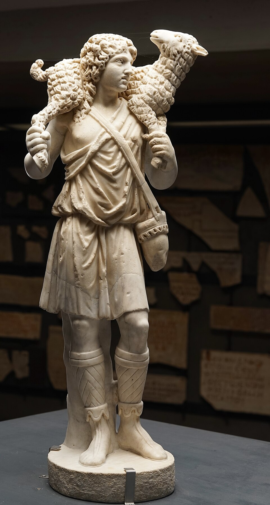
画像を拡大 ＋《善き牧者の小像》
- 作者
- 作者不詳
- 制作時期
- 3世紀末～4世紀初頭（約300年）
- 所在地・所蔵
- ヴァティカン美術館、ピオ・クリスティアーノ美術館、28590
- 素材・形式
- 彫刻
出典・画像について
ほかに、泉を教会、鳩を信者にたとえたものもあります。両手を上げた姿は「オランス」と呼ばれ、祈る姿を表しています。

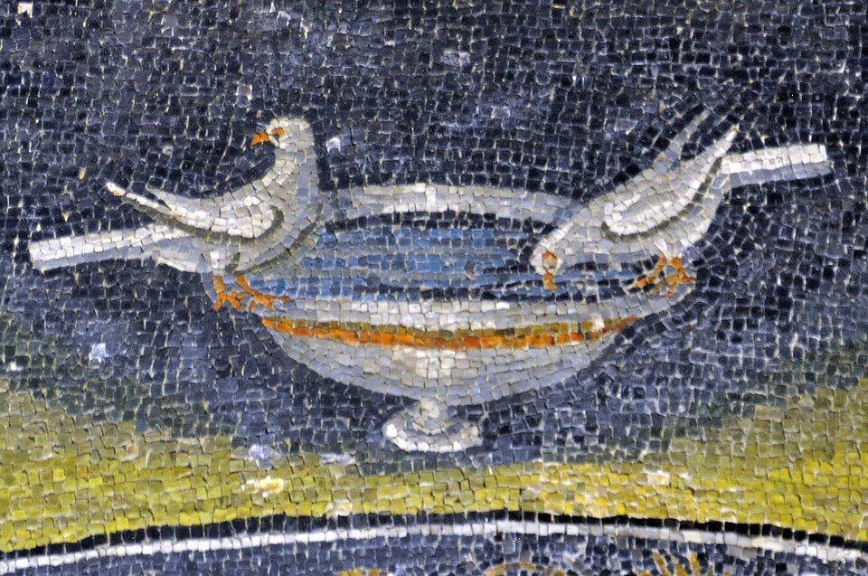
画像を拡大 ＋《水盤の鳩（ガッラ・プラキディア廟）》
- 作者
- 作者不詳
- 制作時期
- 5世紀前半（425～450年頃）
- 所在地・所蔵
- ラヴェンナ、ガッラ・プラキディア廟、西壁
- 素材・形式
- モザイク
出典・画像について
作品情報：作品・画像・利用条件

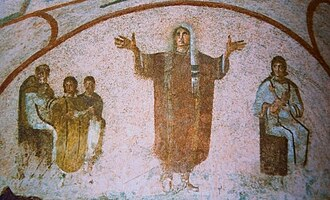
画像を拡大 ＋《オランスを中心とする壁画（プリシッラのカタコンベ）》
- 作者
- 作者不詳
- 制作時期
- 3世紀後半
- 所在地・所蔵
- ローマ、プリシッラのカタコンベ、ヴェラティオの間
- 素材・形式
- 壁画
出典・画像について
帝国の混乱とキリスト教の公認
ローマ帝国の衰退と混乱
動画 3:52～迫害に耐えながら信仰を続けてきた信者は、3世紀頃からのローマ帝国の衰退によって、ついに報われる時を迎えます。広大な領土を統治し続けることは難しく、アフリカ大陸の属州では反乱が絶えなかったとされます。北方のマルコマンニ戦争では、戦争中に皇帝が病没したこともあり、収束まで20年近くかかりました。銀の枯渇も重なり、猛烈なインフレに直面しました。
大浴場に名を残すカラカラ帝の時代には、財政難を打開するため、帝国内に住むすべての人にローマ市民権を与え、税収の増加を図りました。しかし、多くの人が市民権を得たことで、ローマが必ずしも帝国の中心ではなくなってしまいました。

《カラカラ帝の胸像（ウフィツィ美術館）》
- 作者
- 作者不詳
- 制作時期
- 212～217年頃
- 所在地・所蔵
- フィレンツェ、ウフィツィ美術館
- 素材・形式
- 彫刻
出典・画像について
作品情報：作品・画像・利用条件
ローマの求心力が弱まるなかで、領土を四分割し、四人の皇帝で統治するテトラルキアという政治体制が採られることもありました。ローマではなく属州出身の皇帝も現れ、3世紀半ばには、およそ50年間に20人もの皇帝が即位するほどの混乱がありました。

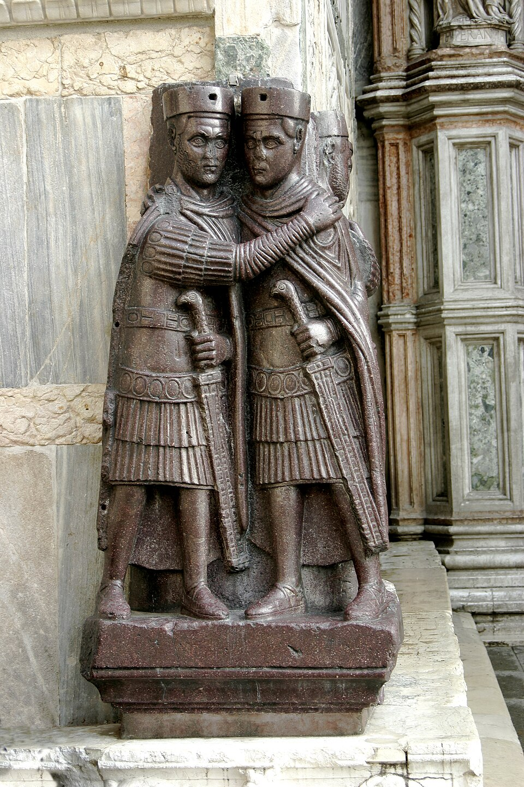
画像を拡大 ＋《四帝像（テトラルキア像）》
- 作者
- 作者不詳
- 制作時期
- 300年頃（3世紀末～4世紀初頭）
- 所在地・所蔵
- ヴェネツィア、サン・マルコ大聖堂南西隅
- 素材・形式
- 彫刻
出典・画像について
画像出典：Nino Barbieri
CC BY-SA 3.0
作品情報：作品・画像・利用条件
ミラノ勅令と信仰の自由
動画 5:00～混乱の時代に帝国を再び統一したのが、306年に即位したコンスタンティヌス1世です。人口の約1割以上を占めていたキリスト教徒を弾圧するのではなく、味方として取り込み、再統一を図りました。313年のミラノ勅令によって信仰の自由が認められ、キリスト教が公認されました。和解というよりも、認めざるを得ない苦しい状況のなかでの選択ともいえます。
画像を拡大 ＋
《コンスタンティヌス大帝の大理石巨像頭部》
- 作者
- 作者不詳
- 制作時期
- 313～324年
- 所在地・所蔵
- ローマ、カピトリーノ美術館
- 素材・形式
- 彫刻
出典・画像について
歴史の記述とネロの評価
動画 5:27～キリスト教が中心となっていくなかで、過去の皇帝の評価も大きく変わりました。キリスト教が中心となったことの影響も考えられます。暴君と呼ばれるネロ帝は、64年のローマ大火の犯人をキリスト教徒と決めつけ、初めて弾圧したことで暴君と呼ばれ、嫌われています。一方、その時代には紛争がなく平和だったことから、実は優秀だったのではないかという見方も強まっています。

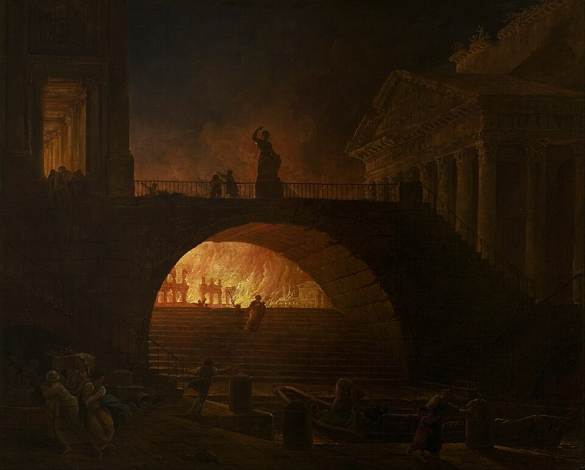
画像を拡大 ＋《ローマの火災（L’incendie de Rome）》
- 作者
- ユベール・ロベール
- 制作時期
- 1771年頃（所蔵館の現行表示）
- 所在地・所蔵
- ル・アーヴル、アンドレ・マルロー近代美術館（MuMa）、226
- 素材・形式
- 油彩画
出典・画像について
近代絵画の忠実な複製画像です。古代の記録そのものではありません。橋上に見える人物は彫像です。
画像出典：Hubert Robert
Public domain（PD-Art）
作品情報：作品・画像・利用条件
現存するネロについての記述のほとんどは、彼を嫌っていた貴族や、王の助言機関と説明される元老院によるものとされます。人物の評価は、誰が歴史を記したかによって大きく変わってしまうのです。
教会勝利の時代と教会建築
教会勝利の時代とバシリカ
動画 6:05～ミラノ勅令の発布によって、信者は堂々と活動できるようになりました。313年からの時期を「教会勝利の時代」と呼びます。地下でこっそり集会する必要がなくなり、集会の場として教会が数多く建てられました。4世紀には、ローマやパレスチナなどに多くの教会が建てられます。代表例として、ローマのサンタ・マリア・マッジョーレ大聖堂が挙げられます。

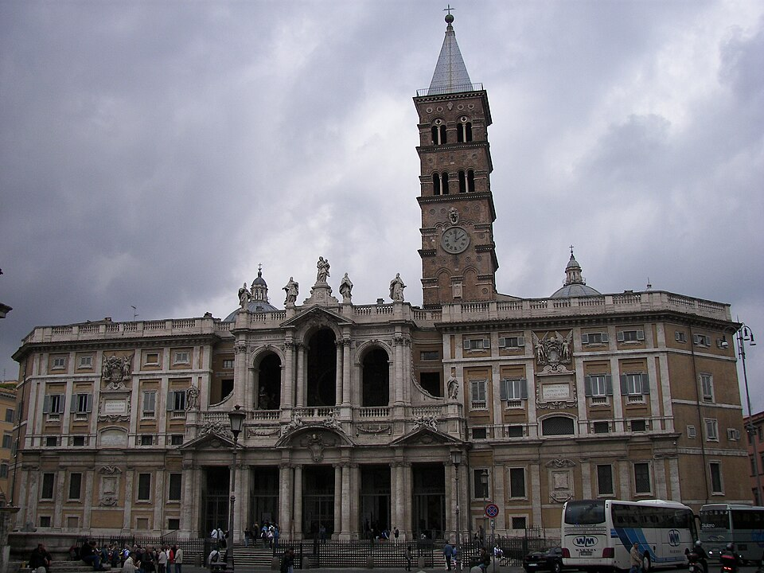
画像を拡大 ＋《サンタ・マリア・マッジョーレ大聖堂（現存正面）》
- 作者
- 初期建築の設計者不詳／現正面：フェルディナンド・フーガ
- 制作時期
- 初期建築432～440年／現正面1741年
- 所在地・所蔵
- ローマ、エスクイリーノ丘
- 素材・形式
- 教会・建築
出典・画像について
教会にはイオニア式やコリント式の柱が用いられ、ギリシャ・ローマ建築の流れを受け継ぎました。この頃の特徴として、外見は質素で、内部は豪勢なことが挙げられます。サンタ・マリア・マッジョーレ大聖堂は、細長い長方形のバシリカ式です。ローマにあった公共建築のバシリカの形を、そのまま引き継いでいます。

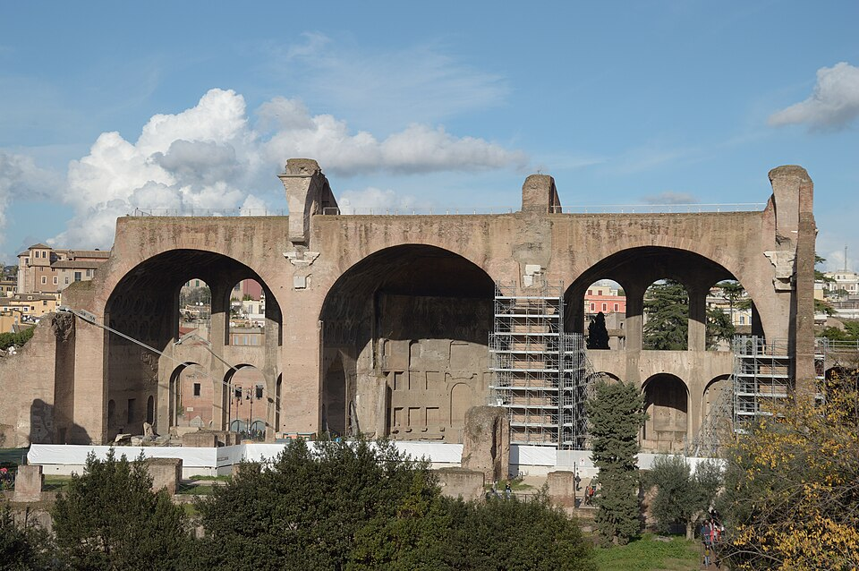
画像を拡大 ＋《マクセンティウスとコンスタンティヌスのバシリカ》
- 作者
- 建築家不詳
- 制作時期
- 4世紀初頭（312年頃）
- 所在地・所蔵
- ローマ、フォロ・ロマーノ
- 素材・形式
- 教会・建築
出典・画像について
画像出典：Livioandronico2013
CC BY-SA 4.0
作品情報：作品・画像・利用条件

《サンタ・マリア・マッジョーレ大聖堂（現存身廊）》
- 作者
- 初期設計者不詳／後世の複数の建築家・工房
- 制作時期
- 初期建築432～440年／現存内部に後世の装飾を含む
- 所在地・所蔵
- ローマ、同大聖堂
- 素材・形式
- 教会・建築
出典・画像について
教会各部の名称
動画 7:09～バシリカ式教会の各部には名称があります。長方形に伸びる長い廊下はネーヴと呼ばれ、その先に、主に主教が座る場所であるアプスが配置されます。アプスは、半円形の奥の部分を指します。柱を隔てた横の廊下はサイド・アイル、ネーヴに直交する部分はトランセプト、ネーヴの手前にある玄関はナルテックスと呼ばれます。これらは美術検定で出題される可能性があるため、受験する場合は覚えておきたい用語です。
東を向いて祈る理由
動画 7:47～多くの教会は、アプスが東を向くように建てられています。その理由には諸説ありますが、聖書では、太陽が東から昇るように、イエス・キリストも東から現れるとされます。このことから、信者が東を向いて祈れるようにするため、という説があります。
東方を「オリエント」と呼ぶことから、教会を東向きに建てることにも「オリエント」という語が使われます。さらに、正しい方向へ導くという意味へと広がりました。新入社員などに行うオリエンテーションにも、その意味が込められています。
図像で聖書を伝える教会
動画 8:25～教会に入り、東へ進んだ先のアプスには、イエス・キリストの図像があり、そこで祈りを捧げます。ネーヴ上部には、キリスト到来に先立つ旧約聖書の場面が描かれています。アプスに向かって歩きながら図像を見ると、自然にキリスト誕生までの流れが分かる構成です。

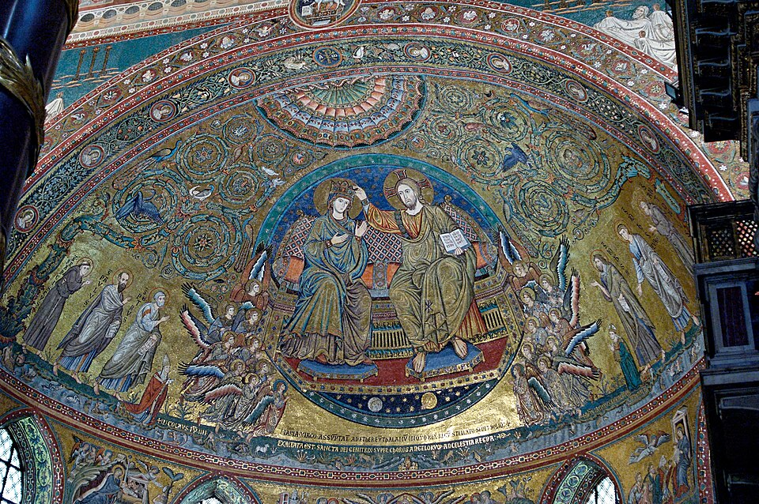
画像を拡大 ＋《アプス・モザイク《聖母戴冠》（サンタ・マリア・マッジョーレ）》
- 作者
- ヤコポ・トッリーティ
- 制作時期
- 1295年
- 所在地・所蔵
- ローマ、サンタ・マリア・マッジョーレ大聖堂
- 素材・形式
- モザイク
出典・画像について

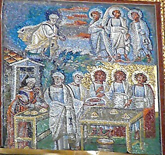
画像を拡大 ＋《身廊モザイク《アブラハムの歓待》（サンタ・マリア・マッジョーレ）》
- 作者
- 作者不詳
- 制作時期
- 5世紀（中世・近代の修復を含む）
- 所在地・所蔵
- ローマ、同大聖堂身廊
- 素材・形式
- モザイク
出典・画像について
文字の読み書きができる人が少なかった時代には、複雑な聖書の内容を絵で理解させることが重要でした。そのため、場面を順番に描く体系的な構成と、単純で統一された表現を用い、巧みさよりも分かりやすさを重視しました。
初期キリスト教から始まる中世の絵は、「下手」と揶揄されることがあります。しかし、これは写実性より分かりやすさを重視した結果です。誰が、どこで、何をしたかが分かれば、役割を果たせます。アンパンマン、ドラえもん、サザエさんのような広く親しまれる作品も、写実性より、人物の特徴の分かりやすさを重視しています。現代の感覚では、ピクトグラムをなぜ写実的に描かないのかと問うことに近いでしょう。文字では想像しにくい場面を、誰にも分かる絵で伝えたことに功績があります。
教会は、集まって祈るだけでなく、聖書の内容を伝える重要な役割を持っていました。バシリカ式の教会は、その構造から大規模になることが多く、大聖堂にあたるものも多くあります。ほかのバシリカ式教会として、サン・ロレンツォ・フオーリ・レ・ムーラ大聖堂やサンタ・サビーナ聖堂も挙げられます。

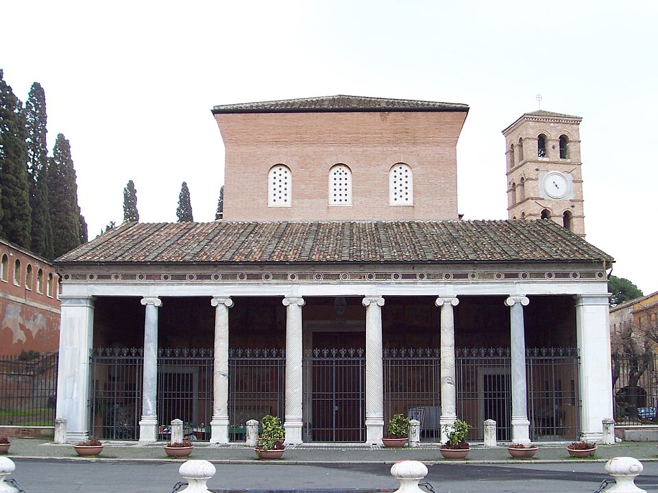
画像を拡大 ＋《サン・ロレンツォ・フオーリ・レ・ムーラ大聖堂（現状正面）》
- 作者
- 設計者不詳／柱廊はヴァッサレット工房に帰属
- 制作時期
- 6世紀末の聖堂を含む／柱廊1220年頃／正面は1943年空襲後再建
- 所在地・所蔵
- ローマ、ピアッツァーレ・デル・ヴェラーノ
- 素材・形式
- 教会・建築
出典・画像について

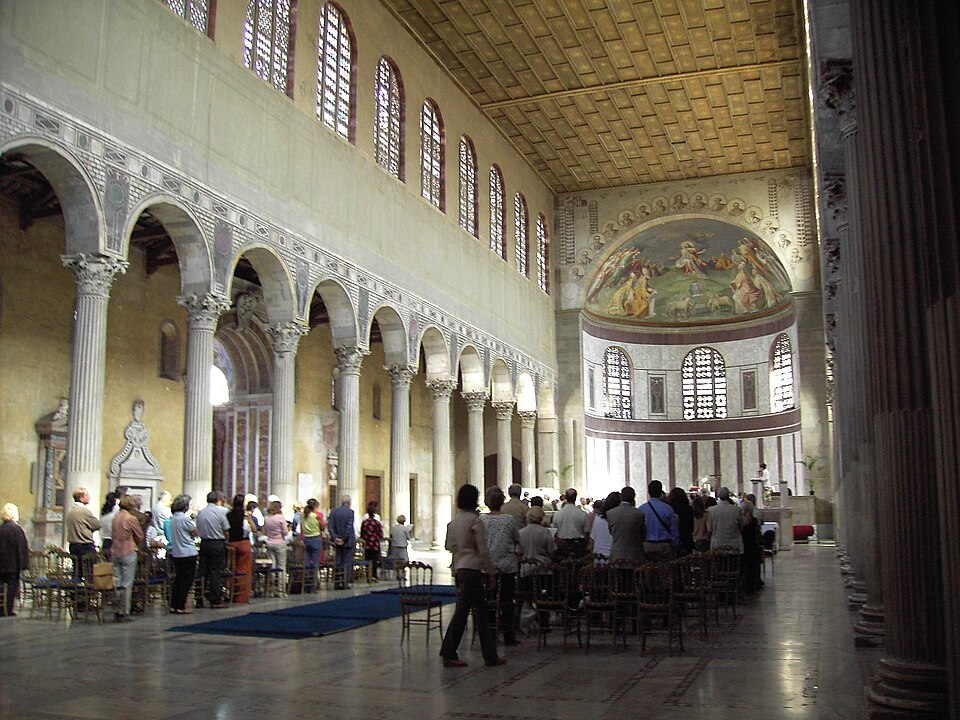
画像を拡大 ＋《サンタ・サビーナ聖堂（内部）》
- 作者
- 設計者不詳
- 制作時期
- 5世紀前半創建／後世改修と20世紀初頭復原を含む
- 所在地・所蔵
- ローマ、アヴェンティーノ丘
- 素材・形式
- 教会・建築
出典・画像について
集中式の洗礼堂と墓廟
動画 10:05～小規模な教会には、集中式という建築様式が使われました。ラテラノ洗礼堂は内部が八角形で、中心に洗礼槽があります。六角形、八角形などの正多角形や円形の規則正しさには、古くから超越性が見いだされるとされ、好まれました。中心部にドームを載せ、天空や天国を象徴する形式が発展したのです。これは東方やヘレニズム様式の墓廟の伝統を受け継いでいます。墓として作られたサンタ・コスタンツァは、集中式円形プランの例です。各地に教会が建つことで、信者はさらに増えていきました。

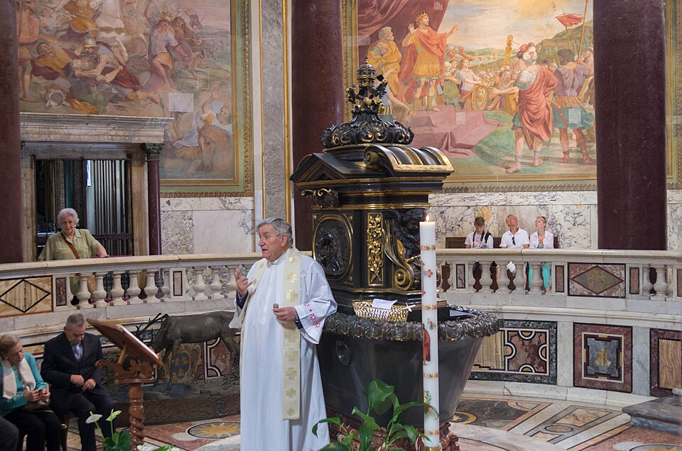
画像を拡大 ＋《ラテラノ洗礼堂（サン・ジョヴァンニ・イン・フォンテ、内部）》
- 作者
- 初期建築の設計者不詳
- 制作時期
- 4世紀創建／八角形構成は遅くとも432～440年／内部装飾は後代を含む
- 所在地・所蔵
- ローマ、サン・ジョヴァンニ・イン・ラテラノ
- 素材・形式
- 教会・建築
出典・画像について

《サンタ・コスタンツァ墓廟（内部）》
- 作者
- 設計者不詳
- 制作時期
- 4世紀中頃（350年頃）、後代の改修・装飾を含む
- 所在地・所蔵
- ローマ、ヴィア・ノメンターナ
- 素材・形式
- 教会・建築
出典・画像について
字幕欠落部分の補完について
自動字幕が音楽タグのみになった約10:00～11:00の解説を、実際の音声のローカル認識と画面の文字から補完しました。原字幕は保持し、補完記録を別ファイルに保存しています。
確認資料：
東西分裂へ
帝国の分裂と美術の展開
動画 10:59～キリスト教を公認したコンスタンティヌス帝は、330年に、現在のイスタンブールにあたるコンスタンティノープルへ首都を移しました。理由はさまざまですが、多神教を信じる人々とキリスト教徒との軋轢を避ける目的もあったとされます。ただし、ローマの影響力はその後も強かったとされ、首都を移したというより、二つ目の首都を作ったという表現が適切かもしれません。
その後、キリスト教が正式にローマ帝国の国教となり、今度は他の宗教団体が鎮圧されました。ギリシャの古代オリンピックも、神に捧げる儀式だったため、その影響で終わらせられました。国教化を行ったのは、テオドシウス帝です。しかし、この頃には、広大な領土の支配は難しい状況になっていました。
テオドシウス帝の死後、395年に帝国は二人の息子へ引き継がれ、東ローマ帝国と西ローマ帝国へ分裂します。当初は、どちらも初期キリスト教美術を受け継ぎましたが、次第に独自の美術を展開しました。東ローマ帝国では、15世紀まで続くビザンティン美術へと発展します。西ローマ帝国は476年に崩壊しましたが、その後、美術は初期中世、ロマネスク、ゴシックへと形を変えていきました。
要点まとめ
- キリスト教は1世紀頃に成立した一神教で、皇帝を神のように崇める皇帝崇拝を受け入れられなかったため、ローマ帝国から313年に公認されるまで迫害された。
- 初期キリスト教美術は、迫害されていた「カタコンベの時代」と、公認後の「教会勝利の時代」に分けられる。
- カタコンベはイタリア語で地下墓所。信者はここで集会し、壁画を描いた。キリストを示す文字の暗号モノグラム（XとPの組合せ）や、羊を連れた若者でキリストを表す暗示的表現、祈る姿のオランスなどが用いられた。
- 3世紀頃からローマ帝国は衰退し、テトラルキアの時代などの混乱が続いた。306年に即位したコンスタンティヌス1世が帝国を再統一し、313年のミラノ勅令でキリスト教を公認した。
- 公認後は多くの教会が建てられた。サンタ・マリア・マッジョーレ大聖堂のようなバシリカ式は、外見が質素で内部が豪勢。各部はネーヴ、アプス、サイド・アイル、トランセプト、ナルテックスと呼ばれ、多くはアプスが東を向く。
- 文字の読めない人が多い時代、教会は聖書の内容を写実性より分かりやすさを重視した図像で伝えた。
- 小規模な教会には集中式が使われ、ラテラノ洗礼堂（八角形）やサンタ・コスタンツァ（円形）が例。
- 330年にコンスタンティヌス帝はコンスタンティノープルへ首都を移し、テオドシウス帝がキリスト教を国教とした。395年に帝国は東西に分裂し、東ではビザンティン美術、西では初期中世、ロマネスク、ゴシックへと展開した。
確認問題
答えを考えてから開いてください。選択問題は選ぶとすぐ正誤と解説が出ます（選択肢の順番は開くたびに変わります）。各問題のリンクから該当の章や作品カードへ戻れます。
選択問題：0／5問回答・正解0
A. 一問一答答えを考えてから開く
問1迫害期のキリスト教信者が集会し、壁画を描いて信仰の対象とした場所で、「地下墓所」を意味するイタリア語は何か。
答えを見る
問2初期キリスト教美術で、両手を上げて祈る姿を何と呼ぶか。
答えを見る
問3313年にコンスタンティヌス1世が発布し、信仰の自由を認めてキリスト教を公認した勅令は何か。
答えを見る
B. 4択選ぶとすぐ正誤と解説
問4バシリカ式教会で、主に主教が座る半円形の奥の部分を何と呼ぶか。
→ 本文で確認（教会各部の名称）
問53世紀の混乱期に採られた、領土を四分割し四人の皇帝で統治する政治体制を何と呼ぶか。
→ 本文で確認（ローマ帝国の衰退と混乱）
問6キリスト教をローマ帝国の国教とした皇帝は誰か。
→ 本文で確認（帝国の分裂と美術の展開）
C. 図版問題画像を見て答える
問7この像の羊を連れた若者は誰を、羊は何を暗示しているか。
答えを見る
問8この彫刻の名前はどれか。
→ 作品カードで確認
問9内部が八角形で、中心に洗礼槽があるこの建物に用いられた建築様式はどれか。
→ 作品カードで確認